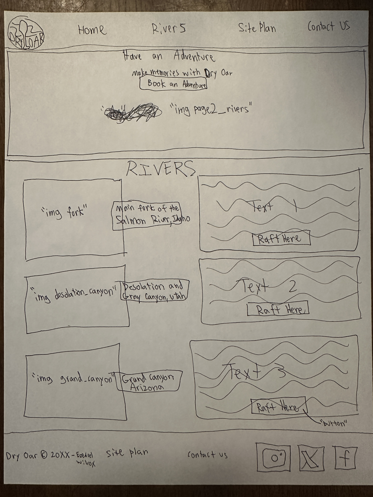

Overview
Purpose
Throughout the history of humanity, people of all ages have enjoyed witnessing the beauty of the earth, exploring, and getting their adrenaline pumping with a hint of danger and reward. The purpose of this website is to convince the viewer why, how, when, and where they should go white water rafting. Our goal as a company is to bring people together. Families, friends, and strangers can witnes the beauty of the earth and work together to overcome obstacles while having fun.
Audience
Here's the why: white water rafting is one of the most amazing experiences that just about anyone can have in their lifetime! Whether they be a couple on a day-date, a group of young boys, or even someone having a scenic time by themselves, white water rafting is the "once in a lifetime" experience you can have over and over again. The best part is that no trip is ever the same as the last. Rafting down the same river is a whole new experience every time! Different seasons can make the journey like an entire new world, and sharing the experience with new people can give a twist to any experience. Not to mention, the course of a river is constantly changing and creating new possibilities for fun, so even just a few years difference can completely change the journey.
Branding
Website Logo

Style Guide
Color Palette
Palette URL:
https://coolors.co/8ecae6-219ebc-023047-ffb703-f9c80e| Primary | Secondary | Accent 1 | Accent 2 |
|---|---|---|---|
| #8ECAE6 | #023047 | #FFF | #FFB703 |
Typography
Heading Font: Rock Salt
Paragraph Font: Open Sans
Normal paragraph example
The best Whitewater Rafting in Colorado, White Water Rafting Company offers rafting on the Colorado and Roaring Fork Rivers in Glenwood Springs. Since 1974, we have been family owned and operated, rafting the Shoshone section of Glenwood Canyon and beyond.
Colored paragraph example
Trips vary from mild and great for families, to trips exclusively for physically fit and experienced rafters. No matter what type of river adventures you are seeking, White Water Rafting Company can make it happen for you.
Navigation
Site Map
Wireframes
Home

Rivers
Text1 Nestled deep in the Frank Church Wilderness of No Return winds the Salmon river. The Salmon was given the nickname long ago as the River of No Return by the people living near it because of the number of folks that came to visit and fell so in love with the rugged beauty of the river that they never left. Herds of elk and deer graze on the hillsides around the river and bear and bighorn sheep are also commonly sighted. The river corridor is also lined with awe inspiring ponderosa pine which tower over the sandy beaches in the campsites and provide shelter from sun or rain when needed. Let's not forget the rapids! They range from class I-IV. The Salmon is one of the longest undammed rivers in the United States. As a free flowing river the water is higher, faster, and colder in the early summer and lower, slower, and warmer in the late summer. There are good rapids all summer...but families with children who like to swim tend to appreciate the late summer's slower, warmer water more.
Text 2 Winding through canyons in central Utah, in some of the most desolate land anywhere, the Green river flows towards the mighty Colorado river and the sea. High grey stone cliffs, beautiful desert scenery, and great rapids have made this run famous. This 84-mile trip runs from from Sand Wash to Swaseys Rapid (just outside Green River Utah) and boasts outstanding scenery, interesting geologic formations, evidence of prehistoric and historic human activity, and great whitewater opportunities. Desolation is rated a Class II/III and is usually done in 6 days. Desolation Canyon has been recognized as a National Landmark. This designation is based on the uniqueness and rich history that the canyon tells.
Text 3 This is the grand daddy of all canyons and the grand daddy of all river trips. You will never forget your visit to the Grand Canyon. Grand Canyon river rafting combines world-class whitewater with breathtaking scenery to make one truly unforgettable river experience. The canyon is filled not only with exhilarating whitewater rapids, but with side canyons and ancient indian ruins accessible only by river. CLASS I - X: The Grand Canyon uses a unique river rating scale. The rapids in the Canyon are technically rated I - X ( 1 - 10) to accommodate such a wide variety of rapids and river variances. However, most people are familiar with the regular I - V river rating scale, so we often refer to both.